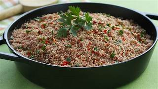

BAHIA
Vatapá
Cremoso prato com camarão, pão, leite de coco e dendê, muito presente nas festas e nas praias.
⏱ 45 min
👥 4 porções
Explore receitas autênticas com imagens reais das preparações. Toque em uma receita para ver ingredientes e modo de preparo.
Cremoso prato com camarão, pão, leite de coco e dendê, muito presente nas festas e nas praias.
Bolinho de feijão fradinho frito no dendê, recheado com vatapá e caruru — patrimônio cultural.
Carne do sol desfiada, servida com macaxeira frita ou cozida — combinação típica nordestina.

Arroz e feijão verde com queijo coalho e carne seca — completo e cheio de sabor.
Massa finíssima enrolada com doce de goiaba — herança cultural pernambucana.

Peixe cozido no leite de coco e azeite de dendê com pimentões e coentro.

Prato rústico com carne de sol desfiada e pilada com farinha de mandioca, típico do sertão nordestino.